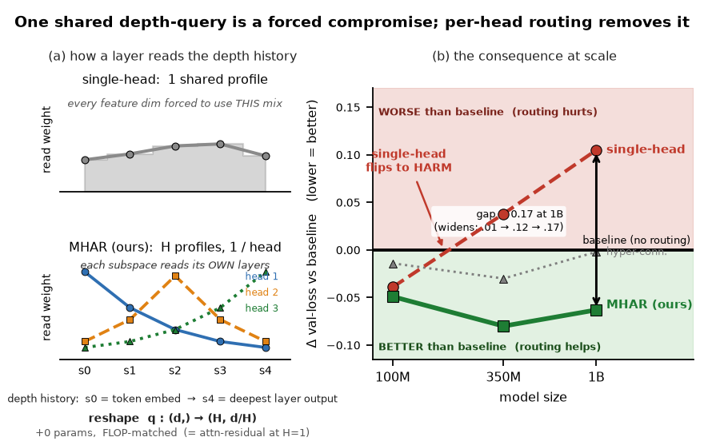

Transformers propagate information across depth through a single additive residual stream: every sublayer reads only the most recent state. Attention residuals relax this by letting each sublayer attend over the depth history through a learned softmax — but that read uses a single query shared across the entire width, so every feature subspace is forced to read the depth history through one distribution. The cost of this forced compromise grows with how much the subspaces disagree about which layers to read, and disagreement grows with model width.

Trained from scratch on a deduplicated Nemotron-based anneal corpus (quality-filtered, STEM- and code-heavy), MHAR improves validation loss over a standard Transformer at every scale we tested, and is the best of four methods in every setting — with the gain increasing at larger scales:
| Scale | Δ validation loss vs. standard Transformer |
|---|---|
| 100M | −0.061 |
| 350M | −0.149 |
| 1B | −0.140 |
Validation loss is U-shaped in $H$, with a flat optimum at $H{=}4$ or $H{=}8$ across scales. We adopt $H{=}8$ for large-scale models; over-splitting beyond this point ($H{=}16$) consistently gives back part of the gain. A direct probe of the trained queries confirms that learned subspace disagreement is the underlying driver of the improvement.
Transformers propagate information across depth through a single additive residual stream: every sublayer reads only the most recent state. Attention residuals relax this by letting each sublayer attend, through a learned softmax. However, that read uses a single query shared across the entire width, so every feature subspace must read the depth history through one distribution. The cost of this forced compromise grows with how much the subspaces disagree about which layers to read, and disagreement grows with model width. We introduce Multi-Head Attention Residuals (MHAR): the routing query is reshaped into H per-subspace heads, each with its own softmax over the depth history. The read becomes block-diagonal, the reshape adds zero parameters and negligible compute, and H = 1 recovers attention residuals exactly. Trained from scratch on a deduplicated Nemotron-based anneal corpus that is quality-filtered and STEM- and code-heavy, MHAR improves validation loss over a standard Transformer at 100M, 350M, and 1B (−0.061, −0.149, and −0.140). It achieves the best result among four methods in every setting, with the gain increasing from 100M to the larger scales. The head count is a real design axis rather than a free knob: validation loss is U-shaped with respect to H, with a flat optimum at H = 4 or H = 8 across scales. We adopt H = 8 for large-scale models; over-splitting beyond this point (H = 16) consistently gives back part of the gain. A direct probe of the trained queries confirms that learned subspace disagreement is the underlying driver. Fused Triton routing kernels increase attention-residual training throughput from 0.2–0.5× to 0.55–0.88× of the baseline while maintaining near-baseline peak memory. An identity-preserving conversion using delta attention residuals supports 8B mid-training, yielding improvements of +3.2 on GSM8K and +3.1 on GPQA.
@article{luo2026mhar,
title={Multi-Head Attention Residuals},
author={Cheng Luo and Zefan Cai and Junjie Hu},
year={2026}
}